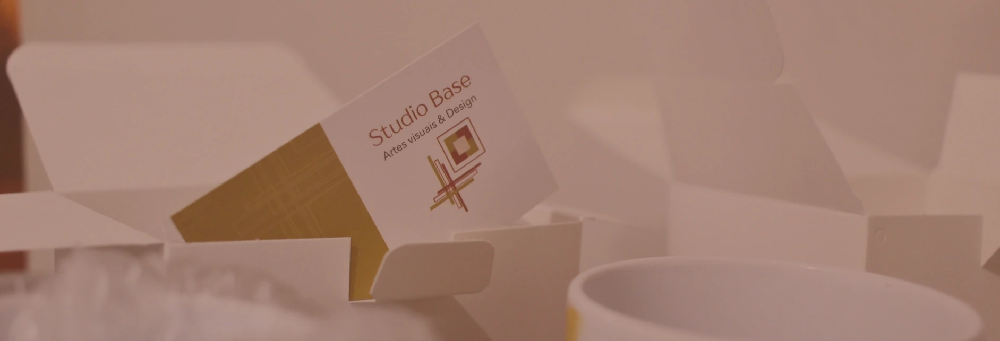

Sua essência, em expressão visual.
Identidades visuais criadas com pesquisa e sensibilidade para traduzir histórias, ideias e negócios em uma linguagem própria.
Identidades que contam histórias.
Projetos que traduzem diferentes histórias e objetivos em identidades visuais próprias.
Arte para o cotidiano.
Escolha uma arte das coleções e personalize detalhes, ou encomende uma ilustração autoral exclusiva.
Uma criação com fundamento.
Um processo de criação baseado em diálogo escrito, pesquisa e desenvolvimento personalizado.
Formulário estratégico
Você nos conta seus objetivos, o que faz, o que deseja comunicar e para quem. O primeiro contato acontece preferencialmente por escrito.
Pesquisa e proposta
Investigamos referências de diferentes áreas e apresentamos uma primeira proposta explicativa, com textos e imagens. Você analisa e indica ajustes.
Arquivos organizados
Após a aprovação e a finalização do projeto, entregamos os arquivos digitais organizados em uma pasta no Google Drive.
Atendimento via WhatsApp, formulários e documentos. Áudios, vídeos e reuniões online ou presenciais em Curitiba e região também podem ser combinados.

Vamos dar forma à sua ideia.
Conte o que você imagina. Para identidade visual, começamos com um formulário estratégico; para canecas, conversamos sobre o modelo ou a criação exclusiva.